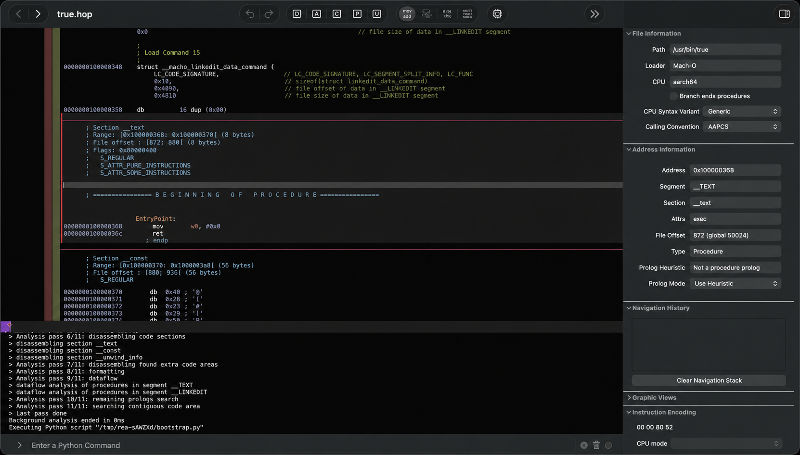

REA
A reverse-engineering assistant that takes apart programs for you - binaries, apps, websites, firmware - and explains what it finds.
Point REA at a compiled program, an Android app, an Electron app or a piece of firmware, and it disassembles, decompiles and explains the code - so you can understand how it works.

How does it work?
You need to understand how a compiled program works - a native binary, an app, a website's code - but reverse engineering by hand takes days of reading assembly.
You have a compiled game from the 1990s and want to understand its level format, or an Android app whose network calls you need to audit.
You point REA at a file or a program and ask it to analyze.
rea analyze game.exe or rea analyze app.apk - REA identifies the format and starts disassembling.
A compiled file: a native binary (ELF, Mach-O, PE), an Android APK, an Electron app, a .NET assembly, EVM bytecode, or firmware.
A Mach-O aarch64 binary, a JavaScript bundle from an Electron app, or smart contract bytecode.
It combines traditional reverse-engineering tools with AI to disassemble, decompile and explain the code.
- Identifies the file format and architecture, then disassembles or decompiles the code
- Uses AI agents to analyze control flow, name functions and explain what each section does
- Builds a navigable model of the program: functions, data structures, cross-references and call graphs
The README showcase: REA analyzes DX-Ball (a 1990s game) to find its level data format, and Notion's Electron app to map its internal architecture.
A human-readable analysis of how the program works, with named functions and explained logic.
- Annotated disassemblyAssembly code with AI-generated function names and comments explaining what each section does
- Decompiled sourceReadable pseudo-code reconstructed from the binary, with data structures identified
- Architecture mapAn overview of the program's modules, their relationships and the key functions in each
What changes for me?
Without it
- Reverse engineering a binary means days of reading raw assembly in Ghidra or IDA, manually naming functions and tracing data flow.
- Each file format (ELF, APK, Electron, firmware) needs its own tools and workflow.
With it
- Point REA at the file and get named functions, explained logic and architecture maps - the AI does the tedious analysis.
- One tool handles native binaries, Android apps, Electron apps, .NET, EVM bytecode and firmware.
How hard is it to try?
Effort
- Read the REA README to understand the supported file formats and installation requirements.
- Download REA or build from source and install it.
- Point it at a simple binary you have:
rea analyze /usr/bin/trueor any small compiled program. Review the output to see the annotated disassembly.
What it takes on your computer
- Space on disk
- No data found for install size.
- Memory while it runs
- No data found. AI analysis of large binaries will use significant memory depending on the model and binary size.
- Runs on
- Mac, Windows, Linux. Requires Python for the bootstrap script. Targets native binaries (ELF, Mach-O, PE), APKs, Electron apps, .NET, EVM and firmware.
Paste this into Claude Code. It runs your safety scan first, then a 10-minute test.
/skillspector https://github.com/morluto/rea If that scan passes: install REA, analyze a simple binary from the system (like /usr/bin/true), and show me the annotated output. 10 minutes max.
Should I?
Great if you...
- You need to understand how a compiled program works and want AI to handle the tedious parts - naming functions, explaining logic, mapping architecture
- You work with multiple file formats (native binaries, APKs, Electron apps, firmware) and want one tool for all of them
Skip it if...
- You are not a developer or security researcher - reverse engineering is a technical discipline even with AI assistance
- You need a proven, audited tool for production security work - REA's star growth is explosive but its track record is short
Instead, you could look at
- GhidraThe NSA's free reverse-engineering tool. Far more mature and proven, but no AI assistance and a steep learning curve.
- Binary NinjaA commercial reverse-engineering platform with a modern interface. Paid ($299+ personal), but well-supported and widely used.
Is it safe?
- Security advisories: 0GitHub's advisory list, checked Oct 10
- Searches for CVEs, vulnerabilities, malware and scams20 results read, including the national CVE database: nothing found
- Are the stars earned?55.7K stars, 50 contributors, 2K commits. findarepo: looks organic
Watch out for
- Explosive star growth needs context. REA went from ~60 to 35K stars in one week at 178 days old. findarepo says the growth looks organic, but the pattern is unusual - it may reflect a viral moment rather than broad adoption.
- MIT license, 1,963 commits, active development. The codebase is substantial and actively maintained, which is a good sign despite the sudden attention.
- Reverse engineering is a specialized skill. Even with AI assistance, understanding the output requires technical knowledge. This is rated 'developers' for a reason.
- Legal context matters. Reverse engineering is legal for interoperability, security research and fair use in most jurisdictions, but check your local laws and the software's license before analyzing proprietary code.
Who's using it, and for what?
REA is 178 days old but gained almost all of its 35K stars in one week. Named real-world use is still early.
We couldn't find anyone describing real use of it yet. That's normal for a brand-new repo, and it's worth knowing.
Who's talking about it
- findarepomorluto/rea on findarepo
- GitHub Trendingmorluto/rea on GitHub Trending
- rea.toolsREA project website
Sources
- REA on GitHub (README, features, showcases), Oct 9
- REA project website, Oct 9
- findarepo: morluto/rea, Oct 9